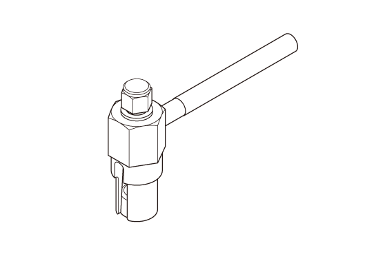

LEMON Manuals
: Even more car manuals for everyone: 1960-2025
Home
>>
Honda
>>
2016
>>
Civic LX, 4D Sedan, Automatic CVT Trans
>>
Repair and Diagnosis (Single Page)
>>
Transmission
>>
Automatic Trans
>>
Continuously Variable Transaxle (CVT) - Testing & Troubleshooting (Inspection - Rewrite)
>>
Inspection
>>
Final Drive Shaft Tapered Roller Bearing Preload Inspection (K20C2, CVT model)
>>
Notes
Final Drive Shaft Tapered Roller Bearing Preload Inspection (K20C2, CVT model): Notes
Special Tools Required
Image
Description/Tool Number

Courtesy of HONDA, U.S.A., INC.
Preload Inspection Tool 070AJ-5T0A100
Courtesy of HONDA, U.S.A., INC.
Driver Handle, 40 mm I.D. 07746-0030100
 Courtesy of HONDA, U.S.A., INC.
Courtesy of HONDA, U.S.A., INC.